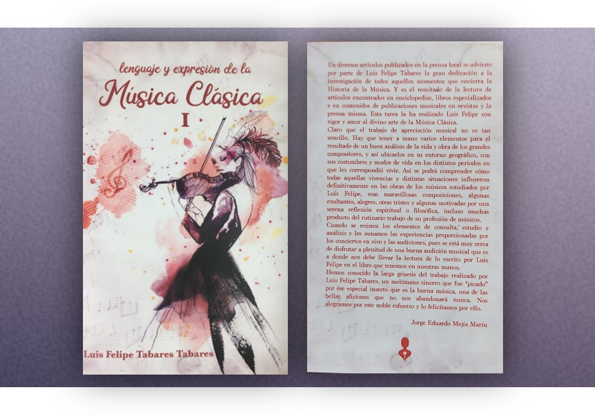

Fernando Macías Vásquez
Fernando Macías Vásquez restaurador y arquitecto. Director Ejecutivo
de la Fundación para la Recuperación de la Memoria Histórica de Salamina y Sur de
Antioquia “Rememoria”. Socio fundador de la Fundación para el Desarrollo y la
Competitividad...
Beatriz Elena Giraldo Gómez
Nació el 14 de julio de 1980 en filadelfia caldas, es auxiliar
administrativo y técnico en preescolar y primera infancia. Desde muy temprana edad se
caracterizó por ser inquieta y activa, a sus 11 años inició su vida literaria,
escribiendo fábulas...
Luz Katherine Castellanos Gil
Nació en Manizales en 1980. Escritora. Ha cultivado varios géneros
literarios, como la poesía, el cuento y la dramaturgia. Licenciada en Literatura y
Lengua Castellana de la Universidad Santo Tomás. Ha participado en varios talleres de
escritura...
Maria Camila Martínez Cardona
Camila Martínez C. (1993), Nacida en Risaralda Caldas, cursó la
primaria en la Institución Educativa María Inmaculada y bachillerato en la Escuela
Normal Superior Rebeca Sierra Cardona, donde terminó con honores en la ciudad...
Diana Toro Ángel
Poeta y Psicóloga especialista en Neuropsicopedagogía nacida en
Filadelfia Caldas (1981).
Fue Representante Legal del Centro de Escritores de Manizales “Roberto Vélez Correa” y
Asesora Cultural de la Fundación “Monseñor Toro Londoño” de Filadelfia...
John Fredy Henao Arias
John Fredy Henao Arias (Manizales, 1991) es Licenciado en Lenguas
Modernas y Magíster en
Educación. Actualmente cursa un Doctorado en la Universidad Castilla-La Mancha (España).
Se ha desempeñado como asistente de Español Lengua Extranjera en París (Francia)...

Luis Felipe Tabares Tabares
Nacido en Manizales. Ingeniero Industrial su pasión es la historia y
apreciación de la música. Ha realizado los cursos “Grandes momentos de la música” -
Universidad Nacional sede Manizales, “Variaciones Mozartianas- Banco de la República...
Juanita Hincapié Mejía
Manizales, 1993. Estudiante de Comunicación Social y Periodismo de la
Universidad de Manizales. Finalista en la convocatoria de la OIM, Crónica Migrante: una
mirada dignificante de un caso de migración interna o externa desde el relato
periodístico...